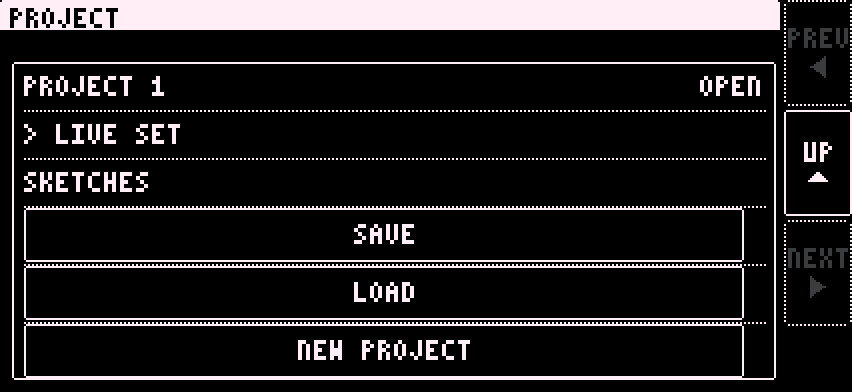

5 Projects
Projects work like on the Elektron boxes. Create, save, load. Load without saving and you lose your changes.

Open PROJECT on the setup page.
Patterns
A new project comes with all its patterns, like on the Elektron boxes. The app follows your pattern changes. A pattern remembers everything except the looper, even after you restart the app. You can copy and paste patterns on the setup page.